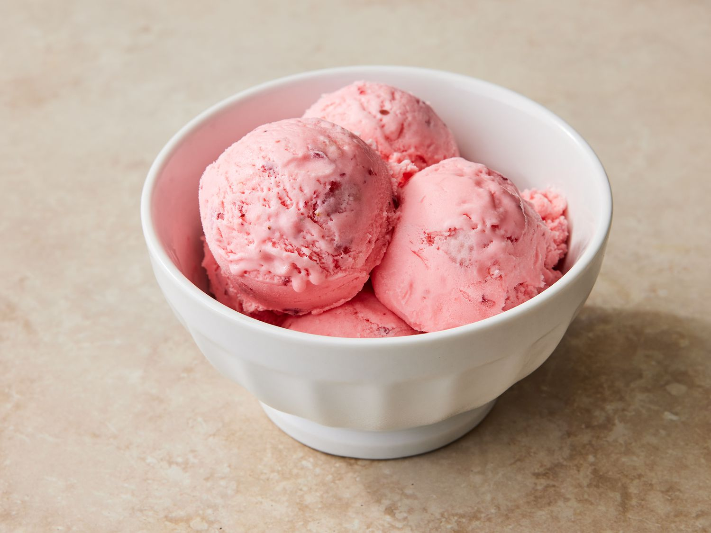

Strawberry Ice Cream

Description
Simple and easy recipe for making a delicious and yummy Strawberry Ice Cream
Ice Cream Recipe
Ingredients
- 2 cups fresh strawberries, hulled and chopped
- 1 cup heavy cream
- 1 cup whole milk
- ¾ cup sugar
- 1 tsp vanilla extract
- 1 tbsp lemon juice (optional)
- Pinch of salt
Steps
- In a blender or food processor, puree the strawberries until smooth.
- In a mixing bowl, whisk together the heavy cream, whole milk, sugar, and vanilla extract until the sugar is dissolved.
- Add the strawberry puree to the cream mixture and stir until well combined.
- If desired, add lemon juice to enhance the strawberry flavor and a pinch of salt.
- Pour the mixture into an ice cream maker and churn according to the manufacturer's instructions.
- Transfer the churned ice cream to a container and freeze for at least 4 hours, or until firm.
- Let the ice cream sit at room temperature for a few minutes before serving to soften slightly.